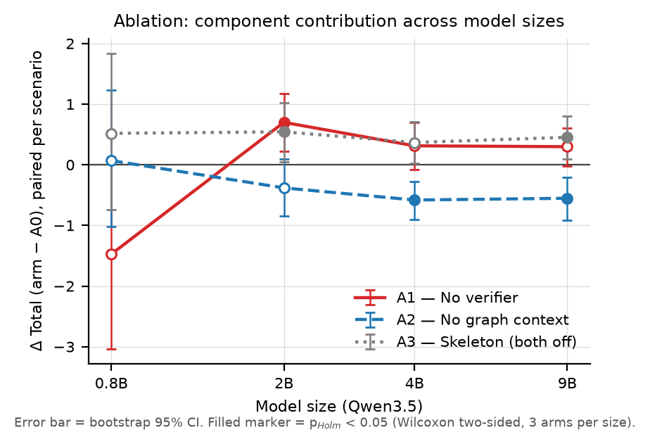

Duy trì chất lượng thiết kế giảng dạy (ISD) khi thu nhỏ mô hình nền open-weight —
harness đa tác tử với alignment graph tường minh, kiểm được và audit được
Nội dung: kết quả ladder 22–23/07 · mới 24/07: ablation study — cơ chế nào của harness thực sự tạo ra chất lượng?
Học viên: Bùi Việt Phương · ~30 phút
Bối cảnh & khoảng trống nghiên cứu
Bối cảnh
LLM thương mại soạn được chương trình giảng dạy tốt — nhưng chi phí API và việc dữ liệu người học đi qua bên thứ ba cản trở triển khai tại trường học, doanh nghiệp.
Giải pháp thực tế hơn: model nhỏ, mở, chạy tại chỗ — rẻ hơn và giữ được dữ liệu. Đánh đổi: model nhỏ thì yếu hơn.
Khi model yếu đi, chất lượng phụ thuộc vào harness — khung điều phối bao quanh model: phân rã tác vụ, quản lý trạng thái, kiểm soát chất lượng. Câu hỏi trung tâm: harness bù được bao nhiêu khi thu nhỏ model?
Khoảng trống
Gap 1: chưa ai nghiên cứu việc giữ chất lượng khi thu nhỏ model như một mục tiêu thiết kế & đánh giá của hệ tác tử thiết kế giảng dạy (ISD).
Gap 2:constructive alignment — mục tiêu, hoạt động, đánh giá phải ăn khớp nhau, tiêu chí định nghĩa thành công của thiết kế giảng dạy — chưa được đo trực tiếp bằng thước đo tự động, khách quan (không dùng LLM judge).
Công trình lân cận: Small Models Big Support (SLM hỗ trợ soạn nội dung), LessonPlanLM (fine-tune 7B), Instructional Agents (vẫn dùng API thương mại).
Câu hỏi nghiên cứu & đóng góp
Hai câu hỏi nghiên cứu
RQ1 — Chất lượng giữ được bao nhiêu khi thu nhỏ model? Trên thang Qwen từ 9B xuống 0.8B, AlignmentGraph-ISD duy trì chất lượng thế nào so với 6 hệ đối sánh?
RQ2 — Alignment có đo trực tiếp được không? Đầu ra có mức constructive alignment (mục tiêu–hoạt động–đánh giá ăn khớp) cao hơn đối sánh không, và khoảng cách có nới rộng khi model nhỏ đi không?
Ba đóng góp
C1AlignmentGraph-ISD — hệ đa tác tử soạn chương trình theo ADDIE, trong đó mọi quan hệ alignment được ghi thành đồ thị tường minh: máy kiểm được, người dạy xem lại và can thiệp được.
C2Thước đo alignment — bổ sung cho ISD-Agent-Bench một thước đo constructive alignment định lượng, tự động, không nhờ LLM chấm (gốc: Porter index + tiêu chí Webb + độ phủ ngữ nghĩa).
C3Bằng chứng thực nghiệm về scale — so sánh có kiểm soát trên 4 cỡ model cùng họ (0.8B/2B/4B/9B), mỗi cỡ 3 lần chạy độc lập, đo bằng cả hai thước.
Giả thuyết thiết kế: model nhỏ yếu với tác vụ mở, nhiều ràng buộc → thu hẹp tác vụ của mỗi call (mỗi tác tử phụ trách một khâu ISD) + một bộ nhớ chung để các phần sinh riêng vẫn ăn khớp về sư phạm.
Phương pháp — AlignmentGraph-ISD harness
Ý tưởng cốt lõi: thu hẹp tác vụ của mỗi call (phân rã theo từng mối quan tâm ISD) và biểu diễn mọi quan hệ alignment thành node/edge tường minh trên một đồ thị chung — để verifier kiểm tra được và educator audit được, thay vì để các quan hệ này ẩn trong văn xuôi của một prompt lớn.
Auditability (C1) & Alignment metric (C2)
Đồ thị xuất ra được — người dạy kiểm tra được (C1)
Cuối mỗi lần chạy, hệ xuất toàn bộ đồ thị alignment thành file riêng (dạng máy đọc được + hình vẽ được) — không phải đọc lại log hội thoại.
Người dạy nhìn thấy: mục tiêu nào được đo bởi bài đánh giá nào, được hỗ trợ bởi hoạt động nào → chỗ nào lệch thì thấy ngay và sửa được.
Định vị rõ: công cụ hỗ trợ quyết định cho chuyên gia thiết kế giảng dạy — không thay thế chuyên gia.
Thước đo alignment — tự động, không nhờ LLM chấm (C2)
Gốc từ các thước đo có sẵn trong nghiên cứu giáo dục: Porter index + tiêu chí Webb (độ phủ mức Bloom) + độ phủ ngữ nghĩa giữa mục tiêu và đánh giá.
Chỉ đọc văn bản đầu ra: không gọi LLM, không tin nhãn tự khai của hệ được chấm → tránh vòng lặp "LLM tự chấm LLM".
Giới hạn khai báo minh bạch: thước đo này đo đúng thứ harness được thiết kế để tối ưu — vì vậy thứ hạng luôn được đối chiếu bằng một kênh chấm độc lập (điểm trên ISD-Agent-Bench).
Chấm lại được trên output đã lưu của mọi hệ — không cần chạy lại, ai cũng tái lập được.
Thiết lập thực nghiệm
Dữ liệu, hệ đối sánh, thang điểm
Benchmark: ISD-Agent-Bench, tập test_90 — 90 tình huống thiết kế giảng dạy, phủ đều 10 lĩnh vực × 3 độ khó.
7 hệ tham gia: AlignmentGraph-ISD + 6 hệ đối sánh, từ baseline one-shot (1 call duy nhất) đến các hệ theo quy trình ISD kinh điển (ADDIE, Dick–Carey, RPISD…).
Thang model: cùng họ Qwen3.5 — 0.8B / 2B / 4B / 9B, mỗi cỡ chạy 3 lần độc lập để đo độ dao động.
Điểm trên ISD-Agent-Bench: 2 giám khảo LLM chấm theo rubric; điểm mỗi tình huống = 0.7·nội dung ADDIE + 0.3·quy trình.
Vì sao kết luận đáng tin
Mọi so sánh đều ghép cặp theo từng tình huống (cùng đề, cùng model) — không so trung bình trần trụi; kiểm định + hiệu chỉnh so sánh bội + khoảng tin cậy, khai báo trước khi chạy.
Kết quả phụ (tỉ lệ hỏng output, xu hướng theo cỡ model…) được dán nhãn phụ/khám phá — không trộn vào kết luận chính.
Giới hạn khai báo minh bạch: ô nào hệ đối sánh không tạo được output hợp lệ ở phần lớn tình huống (còn ≤5 tình huống so được) thì khai báo là không kiểm định được bằng điểm — bằng chứng tại đó lấy từ tỉ lệ failure.
Model của agent và model của judge cấu hình tách biệt (tránh self-preference bias); kết quả các lần chạy trước khi chốt thiết kế nghiên cứu không được sử dụng.
Cách vận hành thực nghiệm — tự động, công bằng, tái lập được
Một dây chuyền tự động từ dữ liệu đến bảng số trong paper
1
Chia dữ liệu → 90 tình huống test
→
2
Dựng 4 model tự host
→
3
Hiệu chỉnh trên tập tách riêng
→
4
Chạy chính thức + giám sát 3 tầng
→
5
Chấm alignment + gộp 12 lần chạy
→
6
Sinh bảng + hình cho paper
Model tự host, cấu hình đồng nhất
4 cỡ Qwen chạy trên GPU thuê, cùng một cấu hình phục vụ — chỉ khác đúng kích thước model → khác biệt đo được là do cỡ model, không do hạ tầng.
Cấu hình kết nối được đồng bộ tự động bằng script, không chỉnh tay — tránh lỗi người thao tác.
Công bằng & kiểm soát chất lượng
Mọi hệ chịu cùng giới hạn tài nguyên: cùng max-token cap mỗi call, cùng chế độ sampling/streaming — điều kiện thi đấu đồng nhất.
Giám sát 3 tầng: kiểm tra trước khi chạy → theo dõi trong khi chạy → soát lại sau khi chạy; 12/12 lần chạy đạt.
Mọi con số trong paper sinh tự động từ dữ liệu chạy — không gõ tay, tái lập được từ đầu đến cuối.
Kết quả 23/07 — 1/6
Độ bền: bằng chứng mạnh nhất
Tỉ lệ tình huống hỏng (không tạo ra được bản thiết kế dùng được) theo cỡ model
Tích cực: AlignmentGraph-ISD tạo output dùng được cho 100% tình huống — cả 12 lần chạy × 90 tình huống, kể cả trên model nhỏ nhất.
Đối chiếu ở 0.8B: baseline one-shot hỏng 87/90, eduplanner 88/90 tình huống; ở 2B vẫn còn 46/90 và 31/90. Khác biệt có ý nghĩa thống kê rất mạnh (p < 10⁻¹⁰).
Diễn giải: với model nhỏ, hệ không có scaffold không chỉ "kém hơn" — phần lớn không tạo được output hợp lệ. Phân rã tác vụ là điều kiện tiên quyết.
Trung thực: một phần failure của baseline one-shot có thể do max-token cap mỗi call (phải sinh toàn bộ chương trình trong một call) — nhưng ở cấp hệ thống, không tạo được bản thiết kế vẫn là failure.
Kết quả 23/07 — 2/6
RQ1 — Điểm trên ISD-Agent-Bench theo thang model
Điểm trên ISD-Agent-Bench (0.7·nội dung ADDIE + 0.3·quy trình), trung bình 3 lần chạy, theo từng tình huống
Agent
0.8B
2B
4B
9B
alignmentgraph
79.8
84.3
85.4
86.2
react-isd
77.9
81.5
85.5
86.5
dick-carey
81.4
80.1
82.3
81.3
rpisd
78.1
79.2
81.1
81.9
addie-agent
75.9
77.9
81.1
81.7
baseline
59.4 ⁿ⁼³
66.7
81.1
82.9
eduplanner
51.3 ⁿ⁼²
63.7
79.2
81.7
Tích cực: đường của AlignmentGraph-ISD cao và phẳng — từ 9B xuống 0.8B, điểm chỉ giảm 6.4 (86.2 → 79.8). Chất lượng được duy trì phần lớn khi thu nhỏ model.
Các hệ không có scaffold suy sụp ở model nhỏ (và chỉ còn rất ít tình huống chấm được — xem slide trước).
Kết quả 23/07 — 3/6
RQ1 — So từng cặp: thắng ở đâu, hòa ở đâu, thua ở đâu
Chênh lệch điểm ISD-Agent-Bench (AlignmentGraph-ISD − đối thủ), ghép cặp theo tình huống, chỉ tính tình huống cả hai bên có bài
Thắng có ý nghĩa thống kê: hai hệ quy trình cùng lớp (ADDIE-agent, RPISD) ở cả 4 cỡ model; Dick-Carey từ 2B trở lên; react-isd ở model nhỏ (0.8B–2B).
Hòa — ghi nhận trung thực: với model lớn (4B–9B), react-isd — quy trình chỉ 2 call, ~1/3 chi phí — đạt điểm tương đương hệ đề xuất. Khi model đủ mạnh, harness không còn tạo khác biệt trên điểm tổng.
Thua — ghi nhận trung thực: ở 0.8B thua Dick-Carey 1.59 điểm (có ý nghĩa thống kê). Hàm ý: cấu trúc quy trình nói chung hỗ trợ model nhỏ — không riêng cấu trúc của hệ đề xuất.
"Harness bù scale" — mức claim giữ được: lợi thế của hệ đề xuất thu hẹp dần khi model lớn lên (đo trực tiếp, có ý nghĩa thống kê) — bù nhiều nhất ở nơi cần nhất.
Kết quả 23/07 — 4/6
RQ1 — Bóc tách điểm: nội dung giảng dạy vs quy trình
Điểm trên ISD-Agent-Bench gồm hai phần: nội dung ADDIE (trái) và quy trình làm việc (phải)
Tích cực: dẫn đầu điểm nội dung ADDIE ở cả 4 cỡ model (80.4 → 86.0) — đây là phần đo chất lượng bản thiết kế giảng dạy thực sự.
Vì sao tổng điểm hòa ở model lớn: react-isd được cộng ở phần quy trình (thang này thưởng quy trình gọn 2 bước), nhưng thua rõ về nội dung ở model nhỏ (73.5 vs 80.4 @ 0.8B).
Ở 0.8B, Dick-Carey tương đương về nội dung (80.1 vs 80.4) nhưng thấp hơn hẳn về alignment (0.445 vs 0.759 — slide sau).
Hệ quả: lợi thế của hệ đề xuất nằm ở nội dung + alignment, không nằm ở điểm quy trình.
Kết quả 23/07 — 5/6
RQ2 — Đo trực tiếp constructive alignment
Thước đo alignment (0–1, tự động, không LLM chấm), gộp 3 lần chạy mỗi cỡ model
Tích cực: dẫn đầu alignment ở cả 4 cỡ model (0.71–0.76) — á quân (Dick-Carey) chỉ 0.45–0.65.
Vế hai của RQ2 được xác nhận: khoảng cách với á quân nới rộng khi model nhỏ đi — từ 0.079 (9B) lên 0.239 (0.8B). Model càng yếu, khung giữ alignment càng đáng giá.
Kiểm tra robustness: thứ hạng giữ nguyên khi chỉ chấm các tình huống mọi hệ đều có output hợp lệ — kết quả không đến từ việc hệ đối sánh failure.
Mọi so sánh có ý nghĩa thống kê ở mức rất mạnh (p < 10⁻¹², effect size gần tối đa).
Kết quả 23/07 — 6/6
RQ2 — Nhìn vào bên trong thước đo, và đối chiếu chéo
Các thành phần của thước đo (Porter, Webb, độ phủ ngữ nghĩa) theo cỡ model
Thước đo alignment vs điểm nội dung ADDIE trên ISD-Agent-Bench — hai kênh chấm độc lập cho cùng thứ hạng
Khai báo minh bạch: điểm tuyệt đối 1.000 ở tiêu chí Webb-range là do chính hệ được thiết kế để bảo đảm quan hệ đó — nó xác nhận cơ chế hoạt động như thiết kế, không phải bằng chứng chất lượng độc lập. Được khai báo rõ trong paper.
Đối trọng: thứ hạng alignment được xác nhận chéo bằng một kênh chấm hoàn toàn độc lập — điểm nội dung ADDIE do giám khảo LLM chấm (hình phải): hai kênh đồng thuận ở cả 4 cỡ model.
Ablation 24/07 — 1/4
Ablation — chất lượng đến từ cơ chế nào?
Harness có hai cơ chế "thông minh" trên nền quy trình ADDIE đa tác tử
1Bộ nhớ đồ thị chung(graph-context): tác tử sau đọc lại sản phẩm của tác tử trước qua alignment graph trước khi viết phần của mình — mục tiêu, đánh giá, hoạt động luôn "nhìn thấy" nhau.
2Vòng tự kiểm & sửa(verifier): sau mỗi bước, hệ tự soát các lỗi alignment (động từ Bloom, độ phủ mục tiêu–đánh giá, rubric…) và sửa tại chỗ.
Ablation = lần lượt tắt từng cơ chế rồi đo lại toàn bộ. Phần chất lượng mất đi khi tắt = đóng góp thật của cơ chế đó.
Phiên bản
Tự kiểm & sửa
Bộ nhớ đồ thị
A0 — đầy đủ
✓
✓
A1 — tắt tự kiểm
✗
✓
A2 — tắt bộ nhớ đồ thị
✓
✗
A3 — tắt cả hai
✗
✗
So sánh công bằng: cả 4 phiên bản làm cùng 90 tình huống, trên cùng 4 cỡ model (0.8B → 9B), và được chấm trong cùng một phiên giám khảo — khác biệt đo được chỉ có thể đến từ cơ chế bị tắt.
Đo bằng hai thước độc lập: điểm trên ISD-Agent-Bench (thang 100, giám khảo LLM chấm) và thước đo alignment chuyên biệt (thang 0–1, không dùng LLM).
Kiểm định: Wilcoxon ghép cặp theo tình huống (n=90) + hiệu chỉnh Holm + bootstrap CI; cấu hình từng phiên bản được máy kiểm tra tự động. Chi tiết: docs/benchmark_guides.md §6b — số sinh tự động, không gõ tay.
Ablation 24/07 — 2/4
Kết quả 1 — bộ nhớ đồ thị là thứ giữ alignment
Alignment (0–1)
0.8B
2B
4B
9B
A0 — đầy đủ
0.744
0.728
0.705
0.727
A1 — tắt tự kiểm
0.740
0.723
0.713
0.736
A2 — tắt bộ nhớ đồ thị
0.657
0.621
0.645
0.683
A3 — tắt cả hai
0.601
0.591
0.609
0.646
Mọi chênh lệch của A2 và A3 so với A0 đều chắc chắn về thống kê (p < 0.001 sau hiệu chỉnh, 90 tình huống ghép cặp). Của A1 thì không (≈ 0).
Tích cực — phát hiện chính: tắt bộ nhớ đồ thị làm alignment giảm rõ ở cả 4 cỡ model (tới ~15% ở 2B). Giảm mạnh nhất ở model nhỏ, thu hẹp dần khi model lớn — đúng luận điểm "harness bù cho model nhỏ".
Tích cực: tắt cả hai cơ chế → giảm sâu nhất ở mọi cỡ model. Hai cơ chế cộng lại giải thích phần lớn lợi thế alignment của hệ.
Trung tính — ghi nhận trung thực: tắt riêng vòng tự kiểm, điểm hầu như không đổi. Nhưng khi bộ nhớ đồ thị đã mất, vòng tự kiểm vẫn bù lại được một phần → vai trò của nó là cơ chế an toàn dự phòng + để lại audit trail (sửa gì, vì sao), không phải nguồn điểm chính.
Chi phí: bộ nhớ đồ thị tốn thêm ~22–25% token; vòng tự kiểm tốn không đáng kể.
Ablation 24/07 — 3/4
Kết quả 2 — điểm trên ISD-Agent-Bench không "nhìn thấy" alignment

Chênh lệch điểm trên ISD-Agent-Bench (phiên bản − đầy đủ): trong ±0.7/100 ở 2B–9B; điểm −1.5 ở 0.8B có khoảng tin cậy rộng, không có ý nghĩa thống kê
Điểm trên ISD-Agent-Bench (giám khảo LLM chấm theo rubric ADDIE) gần như không phân biệt được 4 phiên bản: không khác biệt có ý nghĩa nào vượt quá 0.7/100 — trong khi thước đo alignment chuyên biệt chênh 6–15% cho cùng các phiên bản đó.
Ghi nhận trung thực chiều ngược: tắt vòng tự kiểm thậm chí tăng nhẹ điểm bench (+0.7 ở 2B). Việc sửa lỗi alignment không cải thiện điểm trong đánh giá tổng quát của judge — hai đại lượng khác nhau.
Đây chính là phát hiện: muốn đo constructive alignment thì phải có thước đo chuyên biệt — kết quả này củng cố lý do tồn tại của metric RQ2 (đóng góp 2).
Độ bền không đổi: cả 4 phiên bản đều tạo output dùng được cho 100% tình huống, kể cả trên model nhỏ nhất → độ bền đến từ khung ADDIE đa tác tử + kiểm tra cấu trúc, không phụ thuộc hai cơ chế vừa tắt.
Ablation 24/07 — 4/4
Ablation — kết luận
Tích cựcBộ nhớ đồ thị chung là cơ chế chịu tải cho alignment: đóng góp rõ ở cả 4 cỡ model, lớn nhất ở model nhỏ — bằng chứng ở cấp cơ chế cho luận điểm "harness bù scale".
Trung tínhVòng tự kiểm & sửa không cộng điểm khi bộ nhớ đồ thị còn nguyên; giá trị của nó là cơ chế an toàn dự phòng và audit trail cho chuyên gia (sửa gì, vì sao) — đúng định vị educator-in-the-loop.
Tích cựcĐiểm trên ISD-Agent-Bench không phản ánh alignment (không khác biệt có ý nghĩa nào quá 0.7/100 giữa các phiên bản, trong khi alignment chênh 6–15%) → thước đo alignment chuyên biệt là đóng góp cần thiết, không phải phụ trợ.
Phạm viĐộ bền (100% output ở mọi phiên bản) đến từ khung ADDIE đa tác tử — khung này là nền của mọi phiên bản nên ablation chưa tách riêng được; claim về khung giữ ở mức toàn hệ thống.
Giới hạn — đã đo và khai báo
Điểm tuyệt đối giữa hai đợt chấm (cách nhau 2 ngày) lệch +1.4…+2.0/100 do LLM judge drift theo thời gian → mọi so sánh ablation đều nằm trong cùng một đợt chấm; không đặt số tuyệt đối của hai đợt cạnh nhau.
Mỗi phiên bản chạy 1 lần trên mỗi cỡ model — đủ cho các kết luận trên (90 tình huống ghép cặp, p < 0.001); riêng phần cơ chế an toàn dự phòng, nếu cần khẳng định mạnh hơn sẽ chạy lặp bổ sung.
Toàn bộ số liệu sinh tự động từ dữ liệu chạy (tái lập được); bảng và hình cho paper đã sẵn sàng để đưa thẳng vào bản thảo.
Chi phí vận hành — harness tốn thêm bao nhiêu?
Lượng token mỗi tình huống vs điểm trên ISD-Agent-Bench — đánh đổi chi phí/chất lượng
AlignmentGraph-ISD tốn 22–33k token (~8 call) mỗi tình huống — gấp 2–4 lần baseline one-shot, nhưng vẫn thấp hơn eduplanner và RPISD.
Chi phí phụ trội giảm khi model lớn: 33.2k (0.8B) → 22.5k (9B) — model mạnh hơn thì ít phải regenerate hơn.
Trung thực: ở 9B, react-isd đạt điểm tương đương với ~29% chi phí. Với model lớn, phần chi phí tăng thêm đổi lấy nội dung ADDIE + alignment + auditability — không phải điểm tổng trên bench.
Kết luận (đã hiệu chỉnh theo mức bằng chứng)
1 · Độ bền: tạo output hợp lệ cho 100% tình huống ở mọi cỡ model; các hệ không có scaffold hỏng 87–88/90 ở 0.8B, 31–46/90 ở 2B — với model nhỏ, thiếu scaffold thì phần lớn không tạo được output.
2 · Điểm trên ISD-Agent-Bench: vượt các hệ quy trình cùng lớp ở cả 4 cỡ model; dẫn điểm nội dung ADDIE ở cả 4 cỡ. Ghi nhận trung thực: tương đương react-isd ở model lớn, thấp hơn Dick-Carey 1.59 điểm ở 0.8B.
3 · "Harness bù scale" — mức claim giữ được: lợi thế thu hẹp dần khi model lớn lên (đo trực tiếp, có ý nghĩa thống kê); chênh lệch failure tập trung ở model nhỏ; khoảng cách rất lớn ở 0.8B chỉ nêu kèm điều kiện tính cả các tình huống hệ đối sánh không có output.
4 · Alignment (RQ2): dẫn đầu cả 4 cỡ model, khoảng cách nới rộng khi model nhỏ đi (0.079 → 0.239); giữ nguyên khi chỉ chấm các tình huống mọi hệ đều có output; giới hạn của thước đo đã khai báo và được đối chiếu chéo bằng kênh chấm độc lập.
5 · Ablation: bộ nhớ đồ thị chung là cơ chế duy trì alignment (rõ ở cả 4 cỡ model, lớn nhất ở model nhỏ); vòng tự kiểm = cơ chế an toàn + audit trail; điểm trên ISD-Agent-Bench không phản ánh alignment → khẳng định giá trị của metric RQ2.
Hạn chế & kế hoạch
Hạn chế: chưa tách riêng được khung đa tác tử (nền của mọi phiên bản — claim ở mức hệ thống); metric gần construct với vòng tự kiểm (đã đối chiếu chéo bằng judge); failure của baseline một phần có thể do max-token cap; chưa có expert evaluation.
Kế hoạch: viết mục Ablation vào bản thảo (artifact đã sẵn sàng) → submit IEEE TLT (fallback: EAIT); expert evaluation là bước kế tiếp (ETR&D để dành khi có expert study).
Cảm ơn thầy/cô — mong nhận góp ý về: mức claim của "bù scale" + kết quả ablation, thiết kế expert eval, và lựa chọn journal.